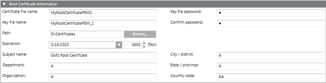

Create a Root Certificate (.pem)
When you create a root certificate for the first time, all the fields appear blank. For all subsequent root certificate creation (.pfx or .pem based), some fields, such as Path, Organization, and so on, are pre-populated with the information from the last-created root certificate.
- In the SMC tree, select Certificate.
- Click Create Certificate
 and select Create Root Certificate (.pem)
and select Create Root Certificate (.pem)  .
. - In the Root Certificate Information expander that displays, enter values into the following fields:
- Certificate file name: The certificate file name and the key file name cannot be same and must not contain blanks or special characters (/,\,?,<, >,*,|,").
- Key file name
- Key file password and confirm it.
- Path: Browse for the location to store the root certificate and the root key file on the disk. By default, the path of the last created root certificate is selected.
- Expiration: Set the expiration (validity period) duration in days. By default, the certificate expires after 3650 days.
- Enter the following information about the subject:
— Subject name
— Department
— Organization
— City / district
— State / province
— Country code (exactly two characters). - Click Save
 .
.
- The data is validated, and the new root certificate (.pem file) and the root key file are created at the specified location on the disk.
To create a host certificate (.pem file), you must have a root certificate (.pem file) and root key (.pem) file along with its password.
You can create multiple host certificates using one root certificate (.pem file).
You can browse and use this (.pem) root certificate for securing Client/Server communication, when you modify the project properties.
